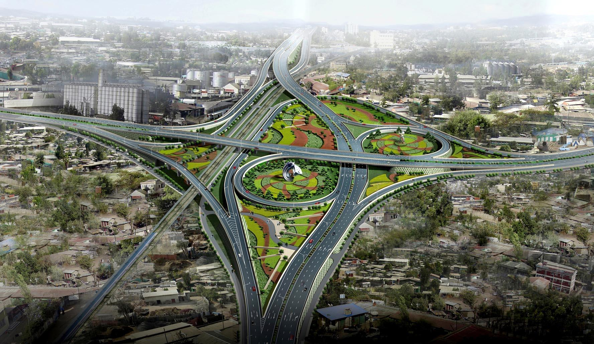
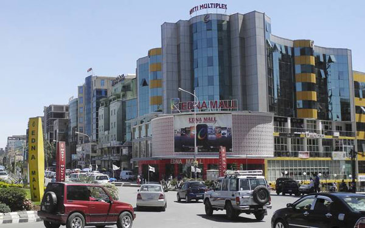

Things to do in Addis

Ethiopian National Museum
(Between Arat Kilo Avenue and the University of Addis Ababa Graduate School).
Although the museum is unknown to most, the Ethiopian National Museum is a world-class museum; truly a hidden
gem! The most famous exhibit is the replica of Lucy, an early hominid, but the museum offers much more.
With Ethiopian civilization being one of the oldest in the world, the artifacts within the museum span thousands
of years, including some from its earliest days. A wide variety of artifacts are featured, from sculptures to
clothing to artwork. Both traditional and modern art are featured. Well worth a visit.
Africa Hall
(located across Menelik II Avenue from the Palace). This is where the United Nations Economic
Commission for Africa is headquartered as well as most UN offices in Ethiopia. It is also the site of the
founding of the Organization for African Unity (OAU) which eventually became the African Union
Entoto Mountain
walk from St. Mary's church, the first church of Addis and St Urael church and see the city
itself from the top of the mountain. If planning to hiring a car - Never pay more than 300 birr for a taxi
unless you hire them for the whole day and are making other stops. Walking is a great way to make it, but will
take a good half day.

Edna Mall
on Telebole. Pretty good bookshop here, along with a Cinema stocked with Popcorn & Western Films.
The center of the mall features an indoor amusement park with carousel, climbing tubes, and bumper cars; it's
a fun place for small children, but really crowded on the weekends and holidays.